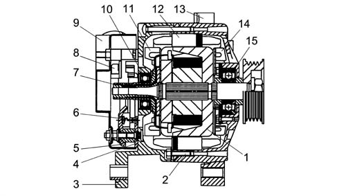
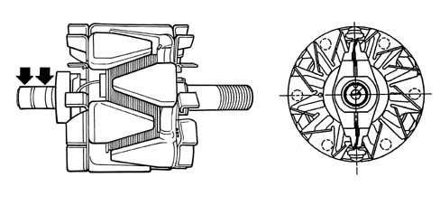
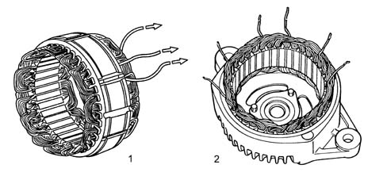
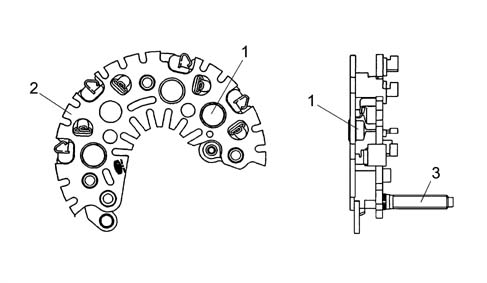
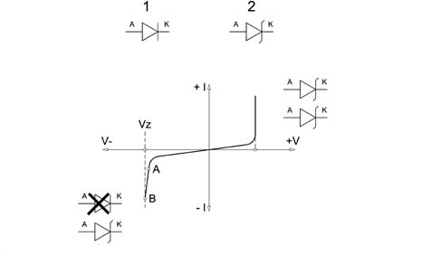
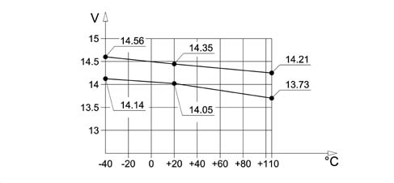
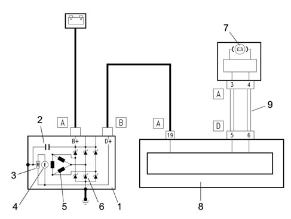

5530A ALTERNATOR AND COMPONENTS
- Path
- Descriptions > 55 ELECTRICAL EQUIPMENT > 5530 CURRENT GENERATOR > 5530A ALTERNATOR AND COMPONENTS
- Kind
- system description
- Applies to
- all engines; all production periods
- Interactive page
- https://sloeber94.github.io/elrnDB-aGt/en/#/125000404
Applies to: all engines; all production periods
COMPOSITION
The alternator is a rotary machine which transforms mechanical energy into electrical energy.

1 - Rotor electro-magnetic circuit
2 - Assembly rods
3 - Rectifier side support
4 - Negative heat dissipation plate
5 - Positive heat dissipation plate
6 - Zener type pressfit power diode
7 - Manifold
8 - Regulation unit
9 - Heat shield cap
10 - Rectifier side bearing
11 - Rectifier side inner fan
12 - Stator electronic circuit
13 - Control side support
14 - Control side inner fan
15 - Control side bearing
Like all electric machines, it basically consists of two parts: a rotor and a stator.
The diagram below shows the rotor for an alternator with internal ventilation.

Rotor
The rotor is composed of a cylindrical magnetic core, concentric to the drive shaft, which has a toroid coil and two opposing magnetic impellers which are magnetized by the winding in the actual core.
The impellers have six, claw-shaped, poles each, which interpolate reciprocally so that there are alternately six North poles and six South poles. There is therefore a single rotor winding which produces the e.m.f. for all the partial magnetic circuits.
Stator
The diagram below illustrates the stator.

1 - Star conection stator
2 - Triangular connection stator
Stator
This consists of a ring-shaped laminated group joined by two or more axial welding seams on the outside. It usually has thirty six grooves which contain the three-phase winding made from insulated copper wire with vinyl acetate and is connected, as necessary, by a star or triangular connection.
RECTIFIER BRIDGE
The diagram shows the rectifier bridge.

1 - Zener type power diode
2 - Dissipation plate
3 - Terminal B + alternator
Bridge specifications
The bridge consists of:
- Zener press-fit diodes.
- Diodes fitted on the dissipation plates electrically connected to the connection terminals with the phases.
- Dissipation plates.
- Large size dissipators.
- Phase insulation until the connection with the bridge through a rubber cable loom.
- Excess voltage limitation if the '+ battery' loads are disconnected guaranteed by the zener diodes.

1 - Normal diode
2 - Zener diode
Zener diodes
If the diodes are polarized directly they both allow the current to pass from the anode to the cathode (V+ I+): a zener diode therefore behaves like a normal silicon diode.
If polarized inversely, initially the current does not flow from the cathode to the anode up to Vz (V-I-).
Beyond Vz a normal diode is ruined, but a zener diode, on the other hand, continues to work normally because its resistance in these conditions decreases sharply. A zener diode is therefore a voltage stabilizer diode. On cars the voltage ranges from 4.7 to 24 Volt. It is one of the most important components in the regulation unit.
It is often used for protection against polarity inversion or excess voltage.
SPECIFCATIONS
ALTERNATOR WITH INTERNAL VENTILATION SPECIFICATIONS
The main feature of this type of alternator, with a 115 mm diameter stator, is having dual internal ventilation with the vanes inclined to guarantee the maximum flow of air and, at the same time, limit noise.
Alternators with internal ventilation, for the same power supply, are smaller and lighter than types with external ventilation and satisfy all current application requirements (space in engine compartments is always at a premium). In addition to this, in terms of quality, these alternators are more reliable and durable than the best the competition currently has to offer on the market.
In depth studies and research have made it possible to introduce all the devices, in production, designed to limit the noise produced by various components (fluid dynamics, mangetic, mechanical).
Typical voltage curve
The graph below shows a typical regulator voltage cuve.

Wiring diagram
The diagram shows the A127-IR-14V-120A alternator.

1- Alternator
2 - Interference condenser
3 - Regulation unit
4 - Energizing rotor
5 - Electric field stator
6 - Zener diode rectifier bridge
7 - Alternator recharging warning light in panel 12V-1.2 - 3.4 W
8 - Body computer
9 - CAN network information
OPERATION
With the alternator not working and the ignition key in the ON position, the body computer lights up the warning light in the instrument panel (NQS) and sends a power supply to the voltage regulator incorporated in the actual alternator via terminal D+.
In these conditions the energizing circuit (rotor) is enabled to earth by the regulator electronics.
With the alternator rotating through the effect of the alteration in the number of revs and the mangetic field, a three-phase alternating volage is produced in the electrical circuit (stator) which, rectified by the diode bridge, can come out of terminal B+.
When the upper fixed calibration level is reached (13.7 - 14.2 V) the battery is charged and the system supplied.
The body computer checks the efficiency of the alternator recharging system by measuring two parameters: the voltage signal coming from alternator terminal D+ and the engine rpm signal received at the CAN network from the injection control unit (NCM).
The lighting up of the warning light in the instrument panel (NQS) is determined by the levels recognized by the body computer being exceeded: in practice, if the voltage is too high (> 16.5 ± 0.5 V) or if the voltage is too low (< 7 ± 0.5 V) this causes the alternator to work irregularly in both cases with a consequent instruction by the NBC to light up the warning light in the instrument panel.
If recharging signals are not present or irregular, carry out the following checks before dismantling the alternator:
- check belt tension;
- check the nut on the positive alternator terminal (B+) is tight and ensure the washer is present;
- check the nut on the excitation terminal (D+) is tight and ensure the washer is present;
- check that the nuts on the positive junction unit in the engine bay are tight;
- check the bolts securing the negative terminal to the body are tight;
- check the battery terminals are clean and fully tight;